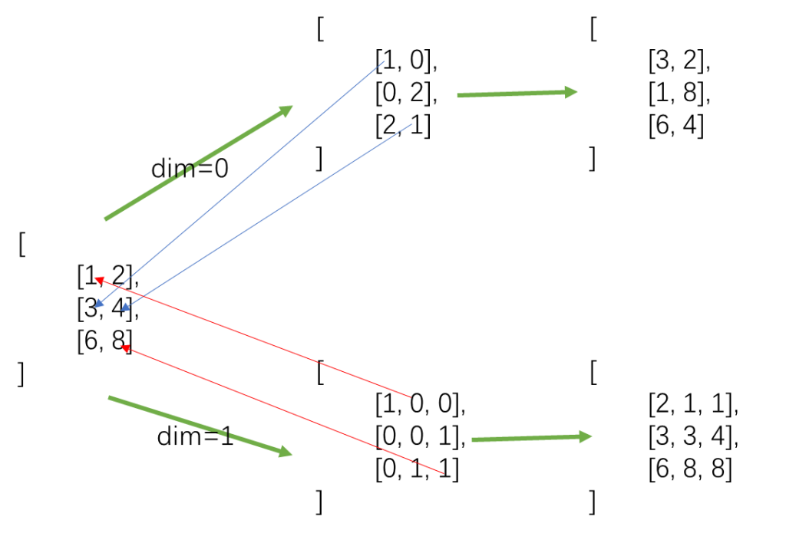
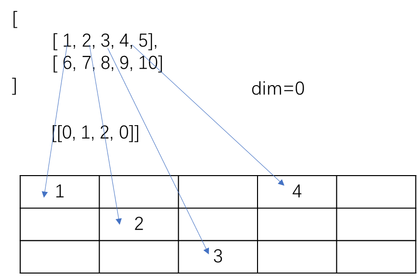

PyTorch中的一些函数
gather
函数形式
1 | torch.gather(input, dim, index, *, sparse_grad=False, out=None) → Tensor |
作用
沿着由dim指定的轴收集数值
输出结果
1 | out[i][j][k] = input[index[i][j][k]][j][k] # if dim == 0 |
举例
1 | >>> t = torch.tensor([[1, 2], [3, 4]]) |
从下图可以看到，当dim=0时，output每列是index每列沿着从上到下的顺序索引input对应列的值填充；当dim=1是，output每行是index每行沿着从左到右的顺序索引input对应行的值填充。

总结
- output的形状与index的一致
- index中数字范围为[0, 轴方向数据个数-1]
- index的维数与input一致
scatter_
函数形式
1 | Tensor.scatter_(dim, index, src, reduce=None) → Tensor |
作用
将src中数据根据index中的索引按照dim的方向填进张量中。
输出结果
1 | self[index[i][j][k]][j][k] = src[i][j][k] # if dim == 0 |
举例
1 | >>> src = torch.arange(1, 11).reshape((2, 5)) |

总结
本博客所有文章除特别声明外，均采用 CC BY-NC-SA 4.0 许可协议。转载请注明来自 HUII's Blog！
相关推荐


评论